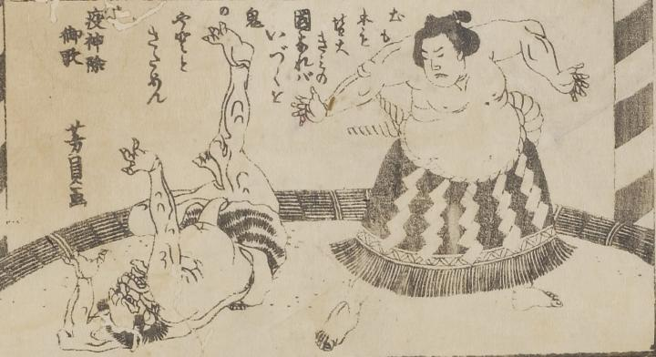

相撲；スモウ，鬼；オニ

鬼が力士と相撲を取り投げ飛ばされている。鬼は虎柄の腰巻をしている。
著作者：歌川芳員／出典：親書誌：U426_nichibunken_0020：たんせきの妙薬；タンセキノミョウヤク／日付：2006／資源識別子：U426_nichibunken_0020_0001_0000
Copyright (c)2010- International Research Center for Japanese Studies, Kyoto, Japan. All rights reserved.